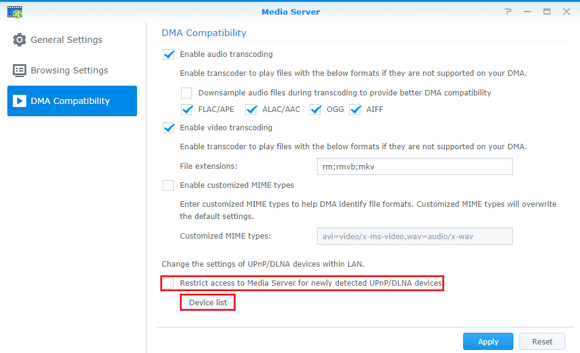

Přehled
Zařízení Synology NAS může plnit funkci multimediálního serveru v místní síti a umožňuje domácím zařízením, jako jsou například televizory/stereo systémy a konzole Sony PlayStation3/Xbox 360, přehrávání multimediálního obsahu. Těmito zařízeními jsou adaptéry digitálních médií (DMA) kompatibilní s DLNA/UPnP. Pro streamování multimediálního obsahu ze serveru Synology NAS na zařízení DMA pro přehrávání musíte nastavit konfiguraci pro přehrávání médií. Například pro nastavení parametrů pro procházení mediálních souborů a zlepšení kompatibility souborů. Tato funkce je k dispozici v balíčku Mediální server.
1. Naistalujte mediální server
Chcete-li nainstalovat mediální server, přejděte prosím na možnost Centrum balíčků, najděte možnost Mediální server a pak klikněte na možnost Instalovat.

2. Nahrajte multimediální soubory na váš server Synology NAS
Po instalaci mediálního serveru na váš NAS se automaticky vytvoří a naindexují výchozí sdílené složky photo, music a video. Stačí prostě nahrát mediální soubory, jako jsou obrázky, skladby nebo videa, do příslušných složek a tyto soubory budou přístupné z vašich zařízení DMA.
3. Nakonfigurujte procházení pro váš přehrávač médií
Můžete určit, jak se budou pomocí zařízení DMA média na vašem serveru Synology NAS procházet.
- Přejděte do části Hlavní nabídka > Mediální server.
- V levém panelu klikněte na Nastavení procházení.
- Podrobnosti najdete kliknutím na tlačítko Nápověda v pravém horním rohu okna Mediální server.

4. Vylepšení kompatibility DMA
Pokud váš televizor DLNA/UPnP nebo zařízení DMA nedokážou hladce přehrát multimediální obsah uložený na vašem NAS, zkuste nakonfigurovat Kompatibilitu DMA na mediálním serveru.
- Pokud chcete zkontrolovat, zda je vaše zařízení DMA správně nainstalováno a zda ho NAS v místní síti nejde, klikněte na možnost Seznam zařízení. Spolu s údaji o zařízení se objeví seznam zařízení DMA.
- Zkontrolujte, zda jste nezaškrtli možnost Omezit přístup k mediálnímu serveru nově detekovaným zařízením UPnP/DLNA. Jinak mediální server nebude pro vaše zařízení DMA přístupný.
Další informace o technické podpoře pro multimediální soubory jiných formátů najdete po kliknutí na tlačítko Nápověda v pravém horním rohu okna Mediální server.
5. Přístup k mediálním souborům uloženým na stanici NAS prostřednictvím DLNA televizoru
DLNA/UPnP a zařízení DMA lze snadno připojit k vaší domácí síti. Jakmile je připojení Synology NAS i zařízení DLNA k vaší domácí síti provedeno, můžete procházet vybrané složky a poslouchat hudbu nebo sledovat videa z vašeho serveru NAS na velké obrazovce.
Postup nastavení závisí na vašich zařízeních DMA splňujících standardy DLNA. Další informace o přístupu k mediálním souborům uloženým na NAS přes DLNA se prosím řiďte pokyny uvedenými pro klientská zařízení.